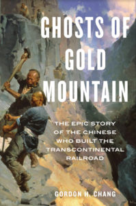
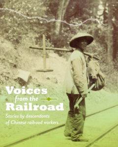
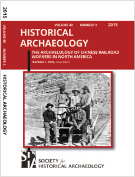
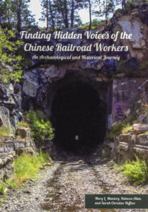
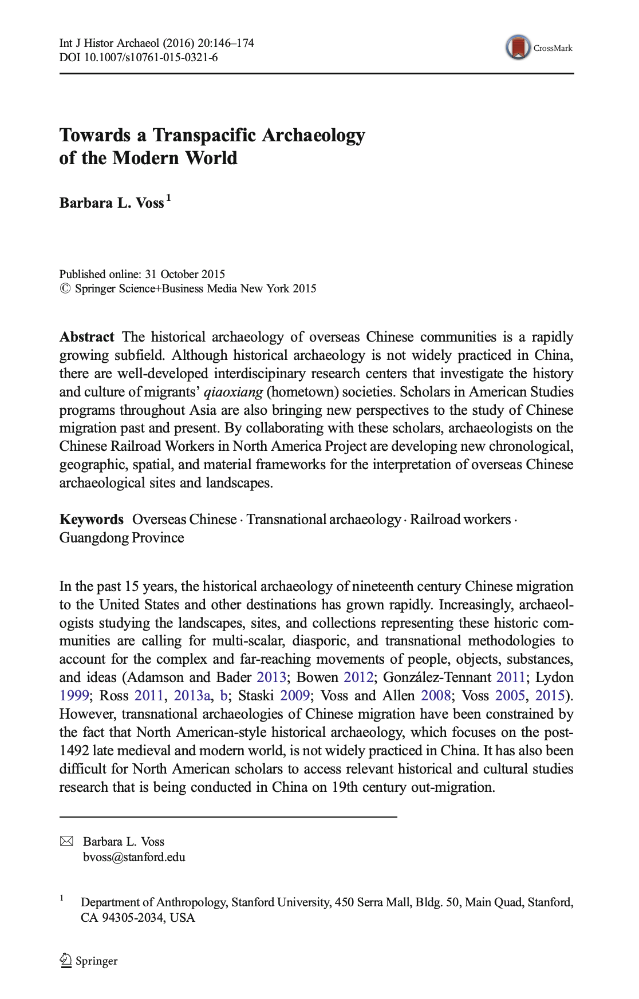
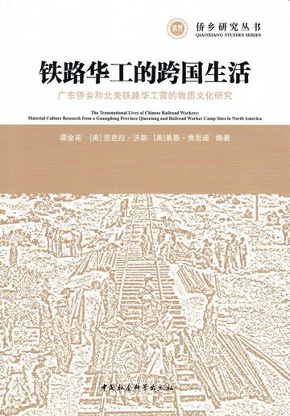
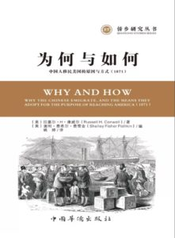
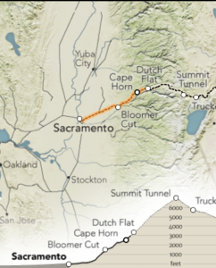

Research publications and accessible resources provided by the Chinese Railroad Workers in North America Project at Stanford
Publications in Print
 The Chinese and the Iron Road: Building the Transcontinental Railroad
The Chinese and the Iron Road: Building the Transcontinental Railroad
Gordon H. Chang and Shelley Fisher Fishkin, editors., with Hilton Obenzinger and Roland Hsu
Stanford University Press, 2019. Now available for purchase.
The Chinese and the Iron Road is the first book to present a comprehensive history of Chinese who helped complete America’s first transcontinental railroad.
The Chinese and the Iron Road recovers the neglected history of Chinese workers who made up about ninety percent of the workforce that constructed the Central Pacific Railroad. The history of the Chinese railroad workers has traditionally been folded into a national history of the culmination of “manifest destiny” linking the two coasts of North America when in 1869 the Golden Spike connected the Central Pacific to the Union Pacific at Promontory Summit, Utah.
This book reveals the Chinese workers through transnational perspectives, and engages readers interested in a range of disciplines to explore our heretofore-unanswered questions: Who were the Chinese who built the railroad? How did they travel across the Pacific? Where were their homes in China, and how did they experience life in the American West? What was their daily life on the line? How did they perform such arduous work? What were their spiritual beliefs? What did they do after the railroad was completed? What did they send back to China? What is their place in our cultural memory?
This book documents and interprets the history of the Chinese railroad workers and contributes to our knowledge of core subjects of immigration across the Pacific, Asian American history, the history of the railroad, and the development of the American West.

Ghosts of Gold Mountain: The Epic Story of the Chinese Who Built the Transcontinental RailroadGordon H. Chang
Houghton Mifflin Harcourt, 2019. Now available for purchase.
From across the sea, they came by the thousands, escaping war and poverty in southern China to seek their fortunes in America. Converging on the enormous western worksite of the Transcontinental Railroad, the migrants spent years dynamiting tunnels through the snow-packed cliffs of the Sierra Nevada and laying tracks across the burning Utah desert. Their sweat and blood fueled the ascent of an interlinked, industrial United States. But those of them who survived this perilous effort would suffer a different kind of death—a historical one, as they were pushed first to the margins of American life and then to the fringes of public memory.
In this groundbreaking account, award-winning scholar Gordon H. Chang draws on unprecedented research to recover the Chinese railroad workers’ stories and celebrate their role in remaking America. An invaluable correction of a great historical injustice, The Ghosts of Gold Mountain returns these “silent spikes” to their rightful place in our national saga.
Before the “Truckee Method”: Race, Space, and Capital in Truckee’s Chinese Community, 1870-1880, by Calvin Cheung-Miaw and Roland Hsu.

Voices from the Railroad: Stories by descendants of Chinese railroad workers, edited by Connie Young Yu and Sue Lee.Voices from the Railroad reveals the stories of Chinese railroad workers and their descendants. These stories have never been told outside of their families: until now. Learn about Chin Lin Sou, Hung Lai Woh, Jim King, Lim Lip Hong, Lee Ling & Lee Yik-Gim, Lee Wong Sang, Lum Ah Chew, Mock Chuck, & Moy Jin Mun, workers of the Central Pacific Railroad. No longer nameless, faceless workers lost to history, their stories will shatter misconceptions about the Chinese who helped build America.
 北美鐵路華工：歷史、文學與視覺再現 [Chinese Railroad Workers in North America: Recovery and Representation], edited by Hsinya Huang [黃心雅] (Taipei: Bookman [台北：書林出版社], 2017).
北美鐵路華工：歷史、文學與視覺再現 [Chinese Railroad Workers in North America: Recovery and Representation], edited by Hsinya Huang [黃心雅] (Taipei: Bookman [台北：書林出版社], 2017).
Preface by Chinese Railroad Workers in North America Project co-directors Gordon H. Chang and Shelley Fisher Fishkin, contributions by scholars from Asia and North America who have been collaborating on Project for the last three years.
The book’s seventeen chapters—arranged in sections devoted to recovery, home, memory, labor, and representation—span disparate geographies, histories, and disciplines; texts and contexts; and archival research and field work in locals ranging from the sending villages in China to the Sierra Nevada Mountains. Together they help address the lack of attention that Chinese railroad workers in North America have received. Essays span a wide range of disciplines including history, literature, archaeology, architecture, political science, American Studies and East Asian Studies.
This interdisciplinary volume will interest scholars in the humanities, diaspora studies, American history and culture, ethnic studies, minority labor studies, and transnational studies.

Special Issue of Historical ArchaeologyIn commemoration of 150th anniversary of the introduction of Chinese workers to the first transcontinental railroad, the Society for Historical Archaeology has published a special thematic issue of its journal, Historical Archaeology. “The Archaeology of Chinese Railroad Workers in North America” features sixteen original articles, including never-before-published accounts of some of the earliest archaeological discoveries on Chinese work camp sites. The journal issue was developed through a Stanford University workshop in October 2013, sponsored and organized by the Chinese Railroad Workers in North America Project; the Project’s Director of Archaeology, Barbara L. Voss, served as guest editor for the thematic issue. To foster interdisciplinary and international collaboration, the Society for Historical Archaeology and the Chinese Railroad Workers in North America Project have generously made four of these articles available for free download:
Fragments of the Past: Archaeology, History, and the Chinese Railroad Workers of North America. Gordon H. Chang and Shelley Fisher Fishkin
The Historical Experience of Labor: Archaeological Contributions to Interdisciplinary Research on Chinese Railroad Workers. Barbara Voss
Commentary on the Archaeology of Chinese Railroad Workers in North America: Where Do We Go from Here? Mary Praetzellis and Adrian Praetzellis
Forgotten Chinese Railroad Workers Remembered: Closing Commentary by an Historian. Sue Fawn Chung
Special issue for purchase:
Paperback ($25) Ebook ($20)

Finding Hidden Voices of the Chinese Railroad WorkersMary Maniery, Rebecca Allen, Sarah Christine Heffner
The Society for Historical Archaeology, 2016
Archaeologists and historians trace the steps of Chinese railroad workers, find evidence of their daily lives, and work to keep the knowledge of their achievements alive for future generations. Finding the Hidden Voices is a wonderful overview of the Chinese contribution to that effort. The book is aimed at the widest audience, rather than an academic one, and to accomplish that it is done in a popular and attractive magazine-type layout style with, as the introduction says, a “vibrantly illustrated format” for the “diverse audience” it is aimed at. Prose is in short snippets. Every aspect of the Chinese working on the railroad is reported: the project in general, the crews, dress, food, the work, work camps, health and medicine, recreation, legacy, etc. There is also some of the archeological work that developed a lot of the information and some of the archeology methods. Book for purchase:
Hardcover ($65)

Towards a Transpacific Archaeology of the Modern World
Barbara L. Voss
International Journal of Historical Archaeology, 2015
The historical archaeology of overseas Chinese communities is a rapidly growing subfield. Although historical archaeology is not widely practiced in China, there are well-developed interdisciplinary research centers that investigate the history and culture of migrants’ qiaoxiang (hometown) societies. Scholars in American Studies programs throughout Asia are also bringing new perspectives to the study of Chinese migration past and present. By collaborating with these scholars, archaeologists on the Chinese Railroad Workers in North America Project are developing new chronological, geographic, spatial, and material frameworks for the interpretation of overseas Chinese archaeological sites and landscapes.

The Transnational Lives of Chinese Migrants Material Culture research from a Guangdong Province Qiaoxiang
Barbara L. Voss, J. Ryan Kennedy, and Selia Jinhua Tan, Editors.
Sponsored by:
广东省文物考古研究所
Guangdong Provincial Institute of Cultural Relics and Archaeology
广东省五邑大学广东侨乡文化研究中心
Guangdong Qiaoxiang Cultural Research Center at Wuyi University, Jiangmen City, Guangdong Province
美国斯坦福大学考古中心
Stanford Archaeology Center at Stanford University, Stanford, California, United States of America

为何与如何：中国人为何出国与如何进入美国 (1871) Why and How the Chinese Emigrate, and the means they adopt for the purpose of reaching America by Russell Conwell (1871)
Edited, with original introduction, notes and appendices, by Shelley Fisher Fishkin [In Chinese]. Translated by Yao Ting [姚婷]. Beijing: Chinese Overseas Publishing House, 2019. This book, first published in English in Boston in 1871 by a journalist named Russell Conwell (who would later become famous as the founder of Temple University), records Conwell’s observations during a trip to Guangdong and other places in the region in 1870. It includes interviews with Chinese who came to the US in the 1860s to work on the railroad and then returned to China, as well as descriptions of living conditions in their villages in Guangdong and the strategies by which they raised the funds for their passage to America. Shelley Fisher Fishkin provides a new introduction, as well as notes and appendices. This is the book’s first publication in Chinese.
Publications Online

Digital VisualizationGeography of Chinese Workers Building the Transcontinental Railroad: A virtual reconstruction of the key historic sites
From the core project team, a “virtual visualization” of the Central Pacific Railroad line projected along the geographical contours of the Sierra Nevada, and with highlights of the achievements and challenges faced by the Chinese railroad workers.
Timeline
From the core project team, this timeline of selected highlights of the Central Pacific Railroad and Chinese who helped build the line and the years that followed.
Web Exclusive Essays
Yong Chen (University of California, Irvine), “Uncovering and Understanding the Experiences of Chinese Railroad Workers in Broader Socioeconomic Context”
This essay examines how the Chinese work on the first transcontinental railroad spurred the rapid growth of the American economy, and also provided the foundation for a transpacific cultural and socioeconomic network of migration, labor, and commerce.
Pin-chia Feng (National Chiao Tung University), “Remembering the Railroad Grandfather in China Men“
This essay gives a brief overview of selected critical writing on China Men, especially from the past two decades, to generate a critical framework for reading this seminal text, then offers a reading of Ah Goong’s story as a literary memorialization of Chinese American railroad workers.
Shelley Fisher Fishkin (Stanford): “Bibliographic Essay for “The Chinese as Railroad Workers after Promontory”
This bibliographic essay supplements the references cited in the print essay in The Chinese and the Iron Road: Building the Transcontinental Railroad. After briefly summarizing “The Chinese as Railroad Workers after Promontory,” it extends and complements—but does not replicate—the citations in the print essay.
Shelley Fisher Fishkin (Stanford): “A New Look at Russell H. Conwell’s Why and How: Why the Chinese Emigrate and The Means They Adopt for Reaching America [1871]”
Russel H. Conwell’s first book, Why and How, offers a unique glimpse into the lives of the workers whose labors had done so much to transform both their own country and the United States.
Laura Hall: “Debt and Death in British Guiana: The Fortunes of Jacob Fung-A-Pan & Abigail Yung She”
This is the story of two Chinese immigrants, Jacob Fung-A-Pan and Abigail Yung She, who migrated from South China to the colony of British Guiana to start new lives on the sugar plantations.
Roland Hsu (Stanford University), “On Migration: Rethinking the benefits brought by the Chinese railroad workers”
Today’s news is filled with anxiety about migration. In the U.S., policy makers and analysts, scholars and journalists alike characterize the flow of immigration as a crisis, and frame migrants as a threat to the national economy, social cohesion and cultural tradition. The Chinese Railroad Workers in North America Project at Stanford has tested such assumptions by unveiling our best evidence of one of the most momentous flows of migrants into the U.S.
Jack Leong (University of Toronto): “The Hong Kong Connection for the Chinese Railroad Workers in North America”
Based on archives, historical records and personal testimonies about Hong Kong’s nineteenth-century, this essay illustrates the port city that migrants from Guangdong would have had encountered when they were there and en-route to North America.
Calvin Miaw (Stanford), “Three Interpretations of the Role of Chinese Railroad Workers in the Construction of the Central Pacific Railroad”
All the accounts of building the first transcontinental railroad interpret the role of the Chinese in its construction, and those interpretations are often highly contested, reflecting different assumptions and attitudes, as well as data.
Hilton Obenzinger, “Historiography of Recovery and Interpretation of the Experience of Chinese Railroad Workers in North America”
This survey draws from the research for The Chinese and the Iron Road: Building the Transcontinental Railroad, eds. Gordon H. Chang and Shelley Fisher Fishkin with Hilton Obenzinger and Roland Hsu and Ghosts of Gold Mountain: The Epic Story of the Chinese Who Built the Transcontinental Railroad, by Gordon H. Chang.
Hilton Obenzinger, “One More Spike in Utah: Commemorating the 150th Anniversary of the Completion of the Transcontinental Railroad at Promontory Summit”
The Chinese workers were not forgotten in 2019. Thousands of participants gathered in the high desert where we witnessed the re-enactment of the “Golden Spike” ceremony that marked the completion of the nation’s first transcontinental railroad.
Michael R. Polk (Aspen Ridge Consultants), Christopher W. Merritt (Utah State Historic Preservation Office), Kenneth P. Cannon (Utah State University), Chinese Workers at Central Pacific Railroad Section Station Camps, 1870−1900
In this essay we describe maintenance camps on the CPRR in Box Elder County, Utah, as well as other stations further west in Nevada and compare them with known ethnic Chinese workers’ construction camps on the CPRR from the 1860s, as well as with camps in Montana dating to the late nineteenth and early twentieth centuries. We draw on archaeological site information, railroad company documents, and census data from 1870, 1880, and 1900.
Li Ju and Linda Ye, “A Photo Comparative Essay of the Central Pacific Railroad”
Over the course of five years, we conducted field visits using modern technology to trace the original railroad route, and pinpoint the geographical coordinates of the locations featured in historical photographs of the work on the railroad line. We compare historical photos with our contemporary images taken at the identical locations. We document new findings about the locations of the sites, the evolution of these sites over time, and the daily lives of the railroad construction workers.
Connie Young Yu, “History from Descendants: An Introduction to Oral History Interviews”
Key to closing the gap in this American narrative is the testimony of descendants. As coordinators of the oral history component of the project, Barre Fong and I conducted close to fifty interviews from early 2013 through spring 2018. Finding information on nineteenth-century railroad workers from descendants three, four, or five generations removed seemed a long shot, but we uncovered surprising revelations from descendants dedicated to the legacy of their forebears.